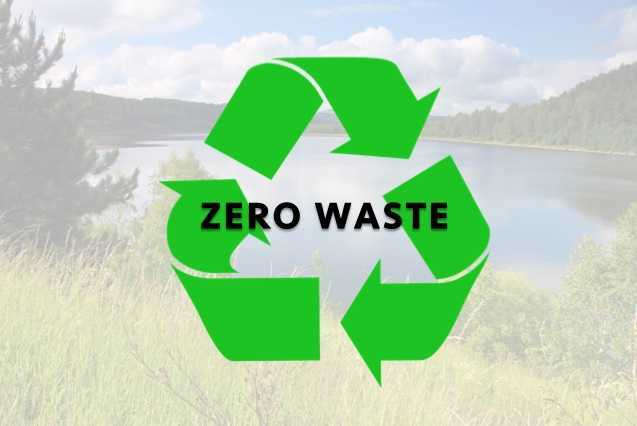
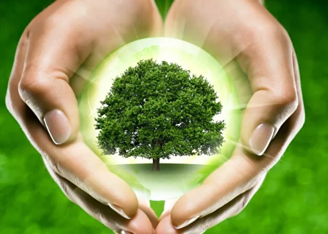
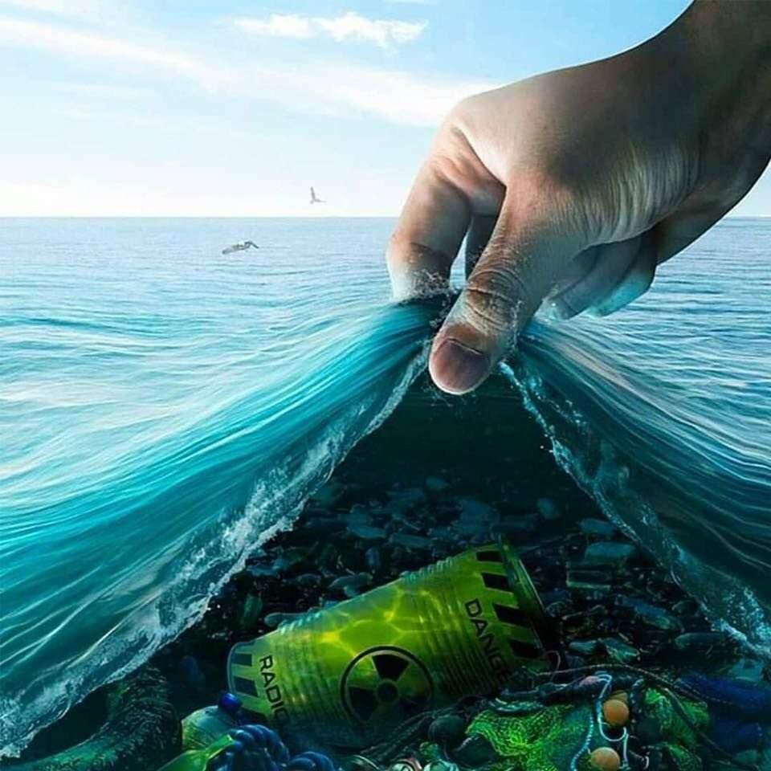
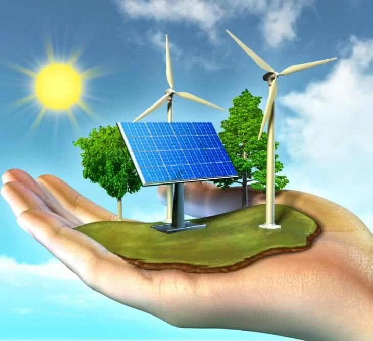
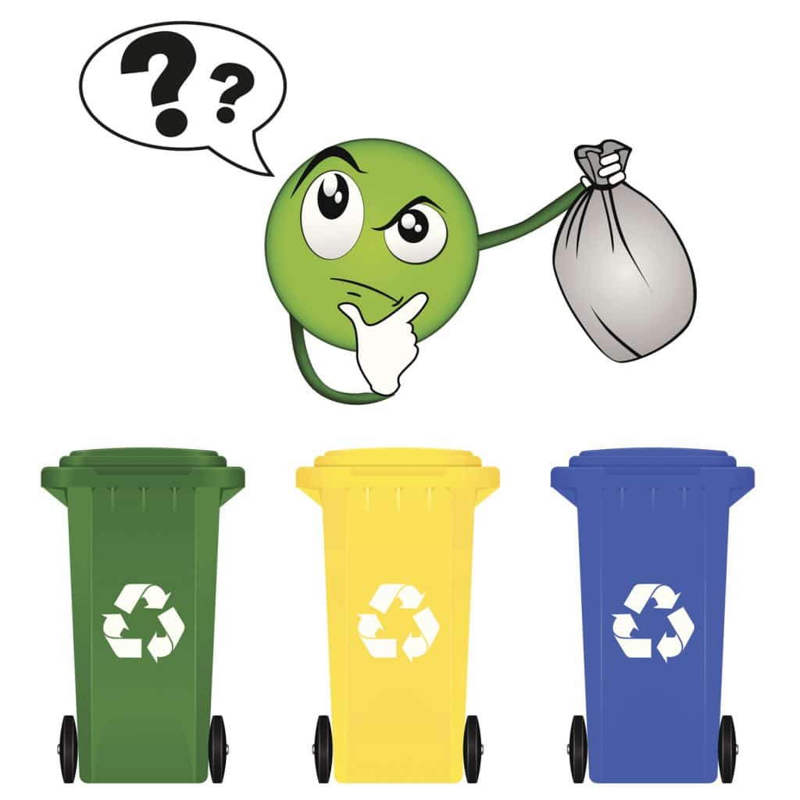

Серия вебинаров по экологическому просвещению
молодёжи
Посетив наш сайт, поделитесь им с друзьями, коллегами и близкими.
Надеемся, что информация окажется для Вас полезной.
Соблюдайте эти несложные правила.
Оставляйте после себя природные уголки в таком виде,
который будет привлекательным для остальных и не навредит природе.
Возрождайте непримиримость к проявлениям экологического невежества,
не проходите мимо, боритесь с этим сообща, информируйте о нарушителях соответствующие органы.
О ПРОЕКТЕ
Цель нашего проекта – привлечь внимание молодежи к проблемам загрязнения окружающей среды, чтобы сначала уменьшить, а затем и предотвратить негативное воздействие человека на окружающую среду. Нужно не просто сообщить участникам о существующих проблемах, но и сформировать понимание, что пока мы не сделаем что-то для окружающей среды своими руками – это за нас не сделает никто.
ОБУЧАЮЩИЙ МАТЕРИАЛ
-

Концепция «Ноль отходов»
Данный урок даст системное представление проблемы отходов и обучение способам сокращения образования бытовых отходов. Урок знакомит с концепцией «Ноль отходов» и принципами циклической экономики, а также формирует понимание того, какие действия может предпринять каждый человек, чтобы внести свой вклад в решение проблемы отходов.
Подробнее -

Сохранение лесов
Данный урок позволит способствовать формированию первоначального представления о взаимодействии человека и природы, влиянии природы на здоровье и эмоциональное состояние человека; создать условия для выведения правила поведения в природе.
Подробнее -

Экология водной среды
Данный урок поможет: выявить причины загрязнения воды и их воздействие на водных обитателей; формировать бережное отношение к природе и рациональное использование природных богатств; развивать умение анализировать, делать выводы в решении экологических проблем.
Подробнее -

Бережное обращение с энергетическими ресурсами
Данный урок поможет: способствовать воспитанию навыков экологически устойчивого и безопасного стиля жизни; привлечь внимание к проблемам использования энергии, экономии энергии и энергоресурсов, охране окружающей среды; создать мотивацию для сбережения ресурсов и энергии; вовлечь школьников в полезную деятельность по энерго- и ресурсосбережению.в.
Подробнее -

Важности раздельного сбора ТБО
В данном уроке слушатели получат знания о способах переработки и вторичном использовании бытовых отходов. Познакомятся с правильной сортировкой мусора.
Подробнее
Зачем нужно экологическое просвещение?
-
1
Человек + природа = единство
Уравнение с одним правильным и вечным для всех времен ответом
-
2
Формирование восприятия окружающей природной среды
Экологически образованный человек понимает, что природа – такое же живое существо, как и он сам
-
3
Формирование понятия "Культура"
С бескультурья по отношению к природе начинается бескультурье по отношению к миру в целом
-
4
Сохранение природы для себя и будущего поколения
Все мы пассажиры одного корабля по имени Земля, значит, пересесть из него просто некуда
-
5
Ценность
Природа как универсальная ценность для человека
-
6
Экологическое образование
Бережное отношение к природе необходимо прививать с момента становления гражданина общества как личности
«В программе дошкольного образования экологическое воспитание прописано обязательным пунктом. Мы проводим специальные занятия в рамках проекта "Экологическая тропинка": во время прогулок рассказываем детям о разных растениях, о том, как устроен окружающий мир. В детском саду всегда происходит первая социализация ребенка. Бережное отношение к экологии – тоже часть социализации, потому что природа – неотъемлемая часть жизни, общества. Почему экологическое воспитание особенно важно в дошкольном возрасте? Мой ответ не будет открытием: в дошкольном возрасте закладываются основы – тот фундамент, от которого отталкивается личность, растет и развивается человек».
Александра Викторовна Субботина, воспитатель первой категории подразделения «Детство» ГБОУ школы № 2129 г. Москвы